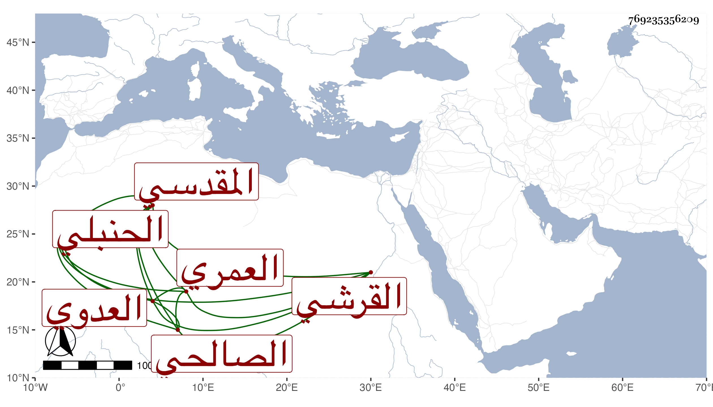

0902Sakhawi.DawLamic.ITO20230111-ara1.EIS1600.769235356209
Biography ID: 769235356209
إبراهيم بن محمد بن موسى بن السيف محمد بن أحمد بن عمر بن الشيخ أبي عمر محمد بن أحمد بن محمد بن قدامة بن مقدام بن نصر بن فتح بن محمد بن حدثة برهان الدين بن سيف الدين القرشي العمري العدوي المقدسي الصالحي الحنبلي ويعرف بالبقاعي . سمع على المحب الصامت في سنة ثمان وسبعين وسبعمائة وعلى أبي بكر بن إسماعيل بن عثمان البيتليدي وأبي الهول علي بن عمر الجزري ومحمد بن أحمد بن محمد بن أحمد بن عمر بن أبي عمر وجماعة وحدث سمع منه الفضلاء وكان خيرا دينا محافظا على الجماعات مع الورع والزهد فلا يأكل إلا من كسبه إلى أن ضعف حاله فانقطع بمنزله وصار لا يخرج منه إلا إلى الصلاة حتى مات .
